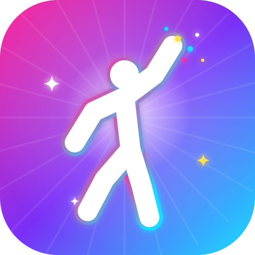
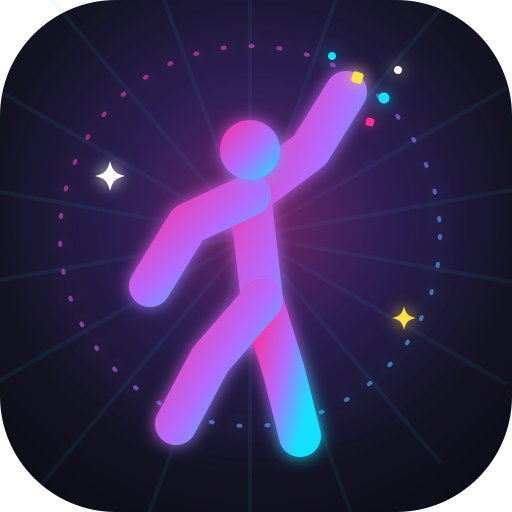
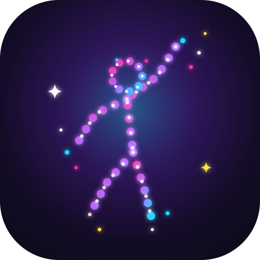
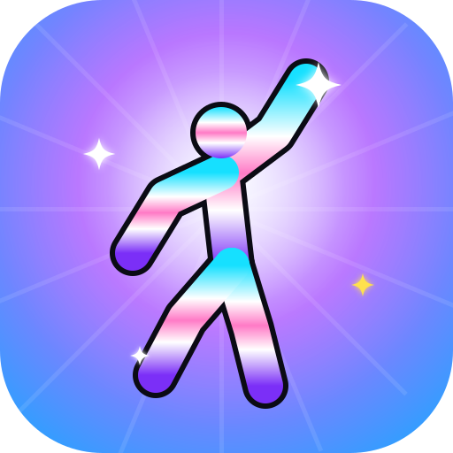
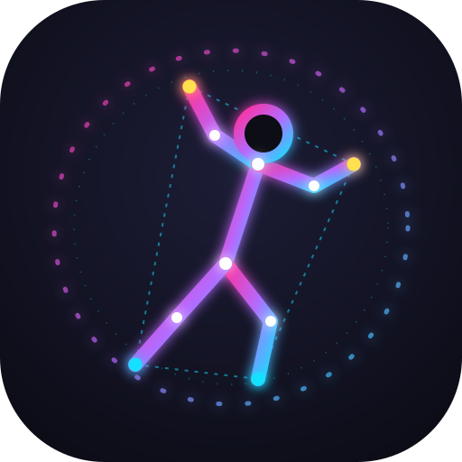
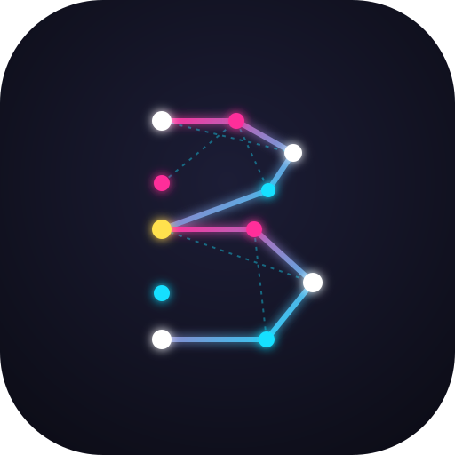
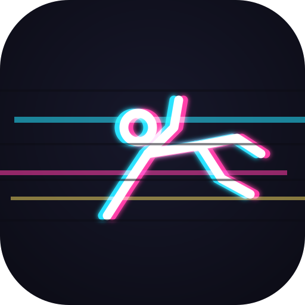
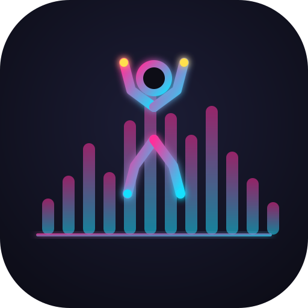
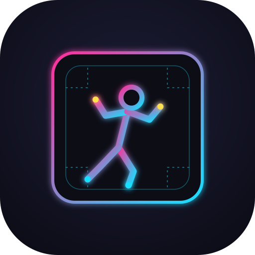

V2 · 参考《舞动人生》 + AI/时尚（新）—— 同一套举手扭胯剪影，四种风格

6Neon Star 霓虹之星
最还原《舞动人生》：亮彩放射背景 + 白色动感剪影，举起的手散出 AI 数据粒子，四周点缀时尚星花。派对感最强、最吸睛。

7Neon Silhouette 霓虹剪影·暗夜版
同款动感剪影，换回你已定的近黑底 + 品红→青霓虹渐变，与栏目片头片尾一致。舞台光环 + 数据粒子，最符合现有 VI。

8Particle Dancer 粒子舞者
同一个舞姿，但整个身体由发光粒子/数据点构成，像 AI 生成的人形在夜空里重组。AI 感最强，潮而不舍街舞内核。

9Chrome Y2K 镜面时尚
剪影填充金属镜面渐变 + Y2K 四角星，千禧+赛博时尚感拉满。亮彩放射背景让它在信息流里非常醒目。
V1 · 首轮 5 个方向（备选）—— 神经网络 / 字母 B / 故障 / 声浪 / 芯片

1Neural B-Boy 神经舞者
霓虹线条勾出一个甩手叉腿的 breaking 舞者，关节是发光的神经网络节点，节点间有虚线连线——街舞骨架直接“长”成一张神经网络。最直白地把“AI 驱动的舞者”画出来。

2Neural “B” 神经网络字母 B
用节点 + 连线拼出字母 B（BestDancer 首字母），既是 AI 网络图又是清晰的品牌字标。极简、识别度高，缩到很小仍成立，最适合做 App / 头像图标。

3Glitch Freeze 故障定格
一个撑地 freeze 的舞者被做成 RGB 通道分离 + 扫描线错位的“数字故障”效果，青/品红重影像信号在跳动——数字生成美学与街舞定格结合，最潮、最有网感。

4Waveform Dancer 声浪舞者
霓虹人形在一排音频频谱柱上起跳，把“音乐节拍 / AI 音频”与舞蹈直接绑在一起。栏目是随音乐律动的教学，这个方向最贴“跟着节奏跳”。

5Chip Step 芯片舞步
一颗带引脚和电路走线的 AI 芯片，中心封装着一个霓虹舞者——“AI 芯片里跑着街舞”。科技隐喻最强，方正稳重，做品牌标识/水印很耐看。